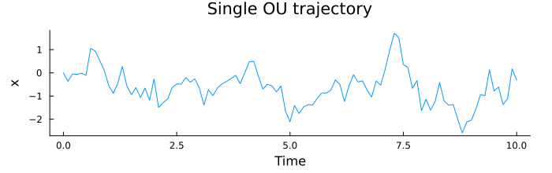
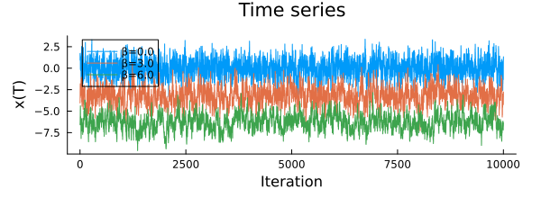
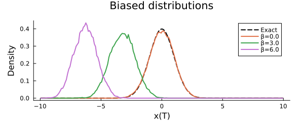
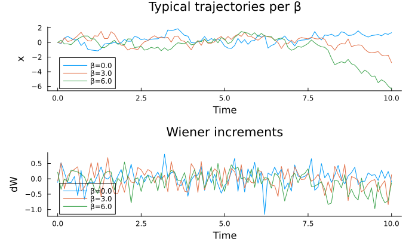
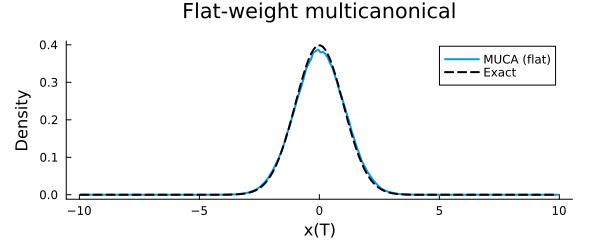
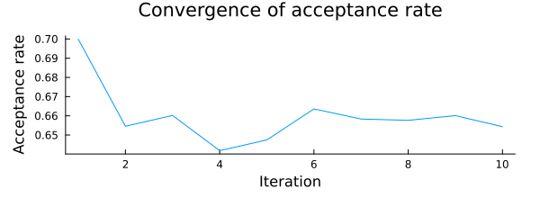
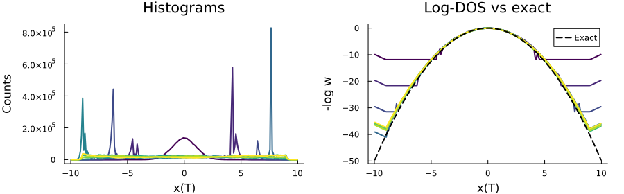

Large Deviations of the Ornstein–Uhlenbeck Process
The Ornstein–Uhlenbeck (OU) process is a continuous-time stochastic process with mean-reverting drift:
\[dx_t = \theta(\mu - x_t)\,dt + \sigma\,dW_t\]
where $\mu$ is the long-time mean, $\theta$ the inverse relaxation timescale, $\sigma = \sqrt{2D}$ the noise amplitude, and $dW_t \sim \mathcal{N}(0, dt)$ a Wiener increment.
The terminal value $x(T)$ is Gaussian with known mean and variance, providing an exact reference against which we validate three sampling strategies: direct sampling, biased Metropolis, and multicanonical iteration.
using Random, Distributions, StatsBase, LinearAlgebra
using MonteCarloX
using Plots, ProgressMeterParameters
μ, D, θ = 0.0, 1.0, 1.0
dt, T, x0 = 0.1, 10.0, 0.0
const CI_MODE = get(ENV, "MCX_SMOKE", get(ENV, "MCX_CI", "false")) == "true"
n_direct = CI_MODE ? 1_000 : 100_000
n_therm = CI_MODE ? 100 : 10_000
n_metro = CI_MODE ? 1_000 : 1_000_000
n_muca = CI_MODE ? 1_000 : 10_000_000
n_iter = CI_MODE ? 3 : 10
n_iter_steps = CI_MODE ? 1_000 : 5_000_000;
# exact terminal distribution (see Wikipedia: OU process)
mean_T = x0 * exp(-T*θ) + μ * (1 - exp(-T*θ))
var_T = θ < 1e-6 ? 2*D*T : D/θ * (1 - exp(-2*T*θ))
std_T = sqrt(var_T)
pdf_T = Normal(mean_T, std_T)
bins_T = (mean_T - 10*std_T) : (std_T/10) : (mean_T + 10*std_T)
centers_T = collect(bins_T[1:end-1] .+ diff(collect(bins_T))./2)
logpdf_T = logpdf.(pdf_T, centers_T)
println("Terminal distribution: mean = $(mean_T), std = $(round(std_T; digits=3))")Terminal distribution: mean = 0.0, std = 1.0Trajectory system
The state is a full discretised trajectory $\{dW_t\}$ of Wiener increments. Each update proposes a change to one randomly chosen increment, accepts it under the Gaussian prior (Metropolis-within-Gibbs), then accepts or rejects based on the terminal value $x(T)$ via the sampling algorithm.
mutable struct OUTrajectory
ts :: Vector{Float64}
xs :: Vector{Float64}
dWs :: Vector{Float64}
tmp_xs :: Vector{Float64}
tmp_dWs :: Vector{Float64}
logpdf_dW :: Function
μ :: Float64; σ :: Float64
θ :: Float64; dt :: Float64
function OUTrajectory(rng; x0=0.0, μ=0.0, D=1.0, θ=1.0, dt=0.1, T=10.0)
N = round(Int, T/dt) + 1
σ = sqrt(2*D)
dist = Normal(0, sqrt(dt))
dWs = rand(rng, dist, N)
xs = zeros(N)
ts = collect(0:dt:(N-1)*dt)
sys = new(ts, xs, dWs, zeros(N), zeros(N),
x -> logpdf(dist, x), μ, σ, θ, dt)
sys.xs[1] = x0
integrate!(sys)
return sys
end
end
@inline function integrate!(sys::OUTrajectory, r::UnitRange{Int}=1:0)
r = isempty(r) ? (1:length(sys.xs)) : r
x = sys.xs[first(r)]
for i in first(r):last(r)-1
x += sys.θ*(sys.μ - x)*sys.dt + sys.σ*sys.dWs[i]
sys.xs[i+1] = x
end
end
x_T(sys::OUTrajectory) = sys.xs[end]
function update!(sys::OUTrajectory, alg::AbstractImportanceSampling; δ=0.5)
idx = rand(alg.rng, 1:length(sys.dWs))
dW_old = sys.dWs[idx]
dW_new = dW_old + δ * (2*rand(alg.rng) - 1)
# accept under Gaussian prior first
if rand(alg.rng) < exp(sys.logpdf_dW(dW_new) - sys.logpdf_dW(dW_old))
sys.tmp_xs[idx:end] .= sys.xs[idx:end]
sys.tmp_dWs[idx:end] .= sys.dWs[idx:end]
sys.dWs[idx] = dW_new
integrate!(sys, idx:length(sys.xs))
if !accept!(alg, sys.xs[end], sys.tmp_xs[end])
sys.xs[idx:end] .= sys.tmp_xs[idx:end]
sys.dWs[idx:end] .= sys.tmp_dWs[idx:end]
end
else
alg.steps += 1
end
end
# visualise a single trajectory
sys0 = OUTrajectory(MersenneTwister(1234); x0=x0, μ=μ, D=D, θ=θ, dt=dt, T=T)
plot(sys0.ts, sys0.xs; label=nothing, xlabel="Time", ylabel="x",
title="Single OU trajectory", size=(700, 220), margin=5Plots.mm)
Direct sampling
We draw $10^5$ independent trajectories and record $x(T)$ as a reference.
direct_samples = [OUTrajectory(MersenneTwister(i); x0=x0, μ=μ, D=D, θ=θ,
dt=dt, T=T).xs[end] for i in 1:n_direct]
hist_direct = normalize(fit(Histogram, direct_samples, bins_T); mode=:pdf)
plot(hist_direct; st=:bar, linewidth=0, alpha=0.6,
label="Direct samples", xlabel="x(T)", ylabel="Density",
title="Terminal distribution vs exact", size=(600, 250), margin=5Plots.mm)
plot!(centers_T, pdf.(pdf_T, centers_T); lw=2, color=:black, ls=:dash, label="Exact")Importance sampling with Metropolis
A biasing field $\beta$ exponentially enhances trajectories ending at large ($\beta > 0$) or small ($\beta < 0$) values of $x(T)$, giving direct access to the tails of the distribution.
function run_metropolis(; β=0.0)
sys = OUTrajectory(MersenneTwister(123); x0=x0, μ=μ, D=D, θ=θ, dt=dt, T=T)
alg = Metropolis(MersenneTwister(42); β=β)
meas_ts = Measurements([:x_T => x_T => Float64[]], interval=100)
meas_hist = Measurements([:x_T => x_T => fit(Histogram, [], bins_T)], interval=1)
for _ in 1:n_therm; update!(sys, alg); end
for i in 1:n_metro
update!(sys, alg)
measure!(meas_hist, sys, i)
measure!(meas_ts, sys, i)
end
println("β = $(β): acceptance = ", round(acceptance_rate(alg); digits=3))
return meas_ts, meas_hist, sys
end
βs = [0.0, 3.0, 6.0]
results = Dict(β => run_metropolis(β=β) for β in βs)
# time series — shows how β shifts the explored region
p_ts = plot(xlabel="Iteration", ylabel="x(T)", title="Time series",
legend=:topleft, size=(600, 220), margin=5Plots.mm)
for β in βs
plot!(p_ts, results[β][1][:x_T].data; label="β=$β", lw=1)
end
p_ts
Terminal distributions under biasing
Each $\beta$ samples a different part of the tail. Together they cover the full distribution including the exponentially rare large-$x(T)$ events.
p_dist = plot(centers_T, pdf.(pdf_T, centers_T);
lw=2, color=:black, ls=:dash, label="Exact",
xlabel="x(T)", ylabel="Density",
title="Biased distributions", size=(600, 250), margin=5Plots.mm)
for β in βs
w = results[β][2][:x_T].data.weights
norm = sum(w) * step(bins_T)
plot!(p_dist, centers_T, w ./ norm; lw=2, label="β=$β")
end
p_dist
Biased trajectories
Larger $\beta$ shifts the ensemble of trajectories toward systematically higher terminal values, revealing the rare fluctuation pathways.
p_traj = plot(xlabel="Time", ylabel="x", title="Typical trajectories per β",
size=(700, 260), margin=5Plots.mm)
p_dW = plot(xlabel="Time", ylabel="dW", title="Wiener increments",
size=(700, 260), margin=5Plots.mm)
for β in βs
sys = results[β][3]
plot!(p_traj, sys.ts, sys.xs; label="β=$β")
plot!(p_dW, sys.ts, sys.dWs; label="β=$β")
println("β=$β: mean x = ", round(mean(sys.xs); digits=3),
" mean dW = ", round(mean(sys.dWs); digits=3))
end
plot(p_traj, p_dW; layout=(2,1), size=(700, 420), margin=5Plots.mm)
Multicanonical sampling — flat histogram
With flat weights the algorithm samples $x(T)$ uniformly across the full support, independently of the shape of the distribution.
sys_muca0 = OUTrajectory(MersenneTwister(123); x0=x0, μ=μ, D=D, θ=θ, dt=dt, T=T)
alg_muca0 = Multicanonical(MersenneTwister(100), BinnedObject(bins_T, 0.0))
meas_muca0 = Measurements([:x_T => x_T => fit(Histogram, [], bins_T)], interval=1)
for _ in 1:n_therm; update!(sys_muca0, alg_muca0); end
for i in 1:n_muca; update!(sys_muca0, alg_muca0); measure!(meas_muca0, sys_muca0, i); end
println("MUCA (flat): acceptance = ", round(acceptance_rate(alg_muca0); digits=3))
w0 = meas_muca0[:x_T].data.weights
norm0 = sum(w0) * step(bins_T)
plot(centers_T, w0 ./ norm0; lw=2, label="MUCA (flat)",
xlabel="x(T)", ylabel="Density",
title="Flat-weight multicanonical", size=(600, 250), margin=5Plots.mm)
plot!(centers_T, pdf.(pdf_T, centers_T); lw=2, color=:black, ls=:dash, label="Exact")
Multicanonical iteration
Starting from flat weights, the algorithm iteratively learns the log-DOS. Linear boundary tails prevent the chain escaping the binned region.
sys_iter = OUTrajectory(MersenneTwister(42); x0=x0, μ=μ, D=D, θ=θ, dt=dt, T=T)
alg_iter = Multicanonical(MersenneTwister(42), BinnedObject(bins_T, 0.0))
n_iter = 10
iter_hists = typeof(ensemble(alg_iter).histogram)[]
iter_lws = typeof(logweight(alg_iter))[]
iter_accept = Float64[]
x_left = first(bins_T) + std_T
x_right = last(bins_T) - std_T
cs = get_centers(logweight(alg_iter))
@showprogress 1 "Iterating MUCA..." for _ in 1:n_iter
for _ in 1:n_therm; update!(sys_iter, alg_iter; δ=0.5); end
reset!(alg_iter)
for _ in 1:n_iter_steps; update!(sys_iter, alg_iter; δ=0.5); end
MonteCarloX.update!(ensemble(alg_iter); mode=:simple)
# reapply linear boundary tails
set!(logweight(alg_iter), (first(cs), x_left),
x -> logweight(alg_iter)(x_left) + (x - x_left) * 2.0)
set!(logweight(alg_iter), (x_right, last(cs)),
x -> logweight(alg_iter)(x_right) - (x - x_right) * 2.0)
push!(iter_hists, deepcopy(ensemble(alg_iter).histogram))
push!(iter_lws, deepcopy(logweight(alg_iter)))
push!(iter_accept, acceptance_rate(alg_iter))
end
plot(iter_accept; xlabel="Iteration", ylabel="Acceptance rate",
title="Convergence of acceptance rate", label=nothing,
size=(600, 220), margin=5Plots.mm)
Plotting convergence of histogram and log-DOS
Each iteration refines the log-DOS estimate toward the exact reference.
function plot_muca_convergence(hists, lws; xlabel="x(T)")
n = length(hists)
cols = palette(:viridis, max(n,2))[1:n]
i0 = searchsortedlast(centers_T, 0.0)
p1 = plot(xlabel=xlabel, ylabel="Counts", title="Histograms", legend=false)
for i in 1:n
plot!(p1, centers_T, hists[i].values; lw=2, color=cols[i])
end
p2 = plot(xlabel=xlabel, ylabel="-log w", title="Log-DOS vs exact",
legend=:topright)
for i in 1:n
w = -lws[i].values .+ lws[i](0.0)
plot!(p2, centers_T, w; lw=2, color=cols[i], label="")
end
plot!(p2, centers_T, logpdf_T .- logpdf_T[i0];
lw=2, color=:black, ls=:dash, label="Exact")
return plot(p1, p2; layout=(1,2), size=(900, 280), margin=4Plots.mm)
end
plot_muca_convergence(iter_hists, iter_lws)
This page was generated using Literate.jl.